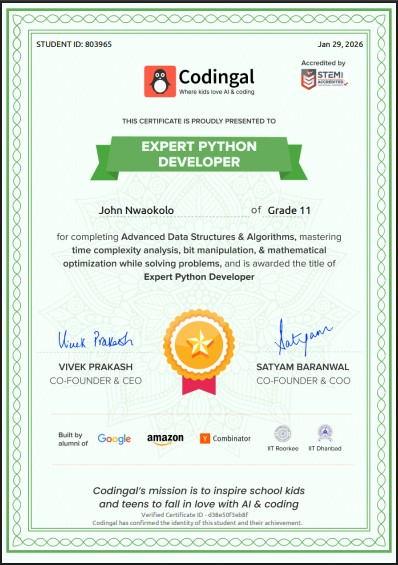
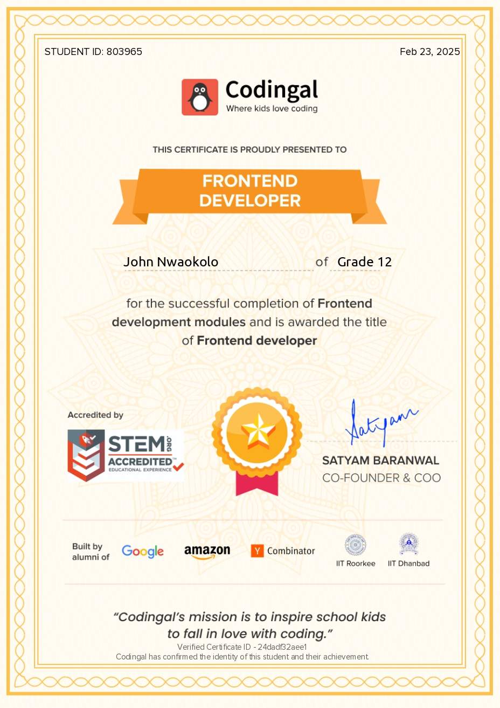

Software Engineering at Adeleke University
Studying the foundations of software development at Adeleke University, Ede, alongside independent product work.
Software engineer, researcher, founder, and Software Engineering student at Adeleke University, Ede.

I am studying Software Engineering at Adeleke University, Ede, while strengthening Python, APIs, backend development, and Git through practical projects.
JDH Studio is my laboratory for that work: a founder-led technology studio where I move from a rough idea to a useful, deployed experience and learn what the system needs at every step.
The milestone that matters most so far is successfully building and deploying the JDH Studio website. The next chapter is understanding the machinery behind AI-powered products, not just operating the tools.
Studying the foundations of software development at Adeleke University, Ede, alongside independent product work.
Created a practical home for product experiments, client-style builds, and automation ideas.
Turning each project into a sharper understanding of code, systems, design, and communication.
Building confidence in server-side logic, APIs, data flow, and dependable foundations.
Learning to make changes understandable, repeatable, and easy to build on.
Exploring APIs, coding agents, tool calling, and workflows that do real work.
Connecting technical decisions to a clear user need and a finished experience.
Certificates are part of the story. The projects are where the learning becomes visible.

Codingal / January 2026

Codingal / 2025
Microsoft / November 2025